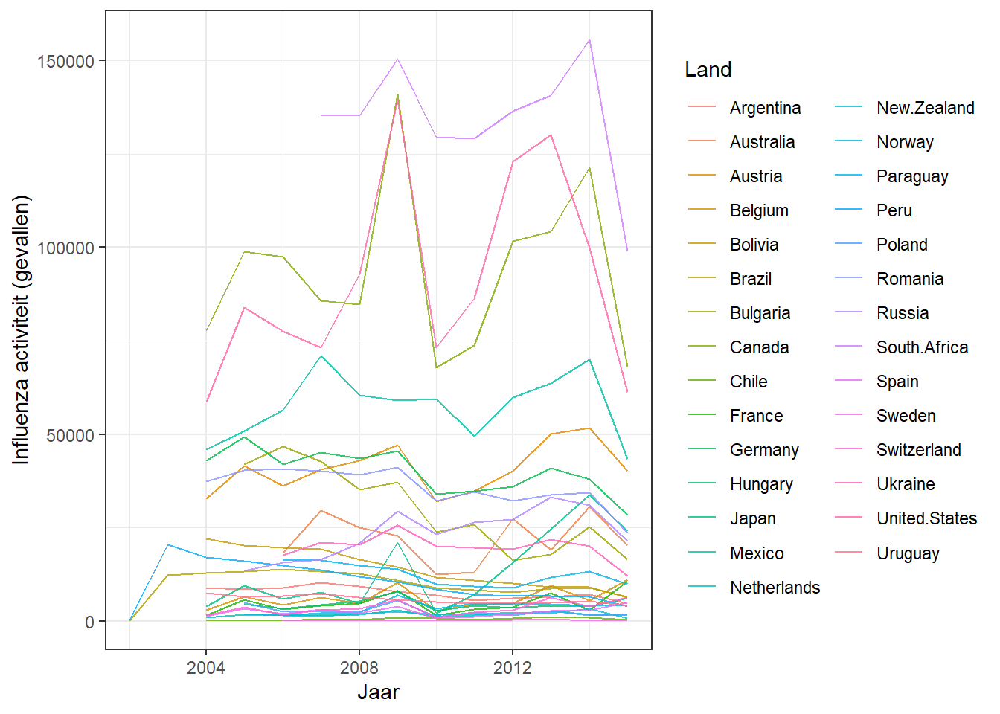
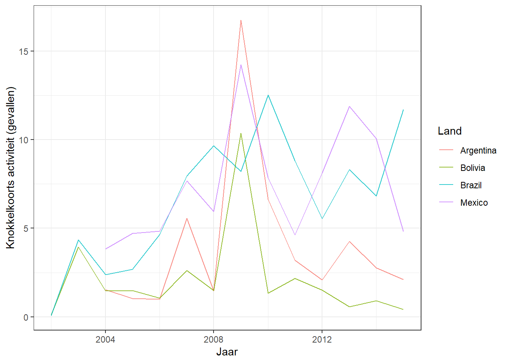
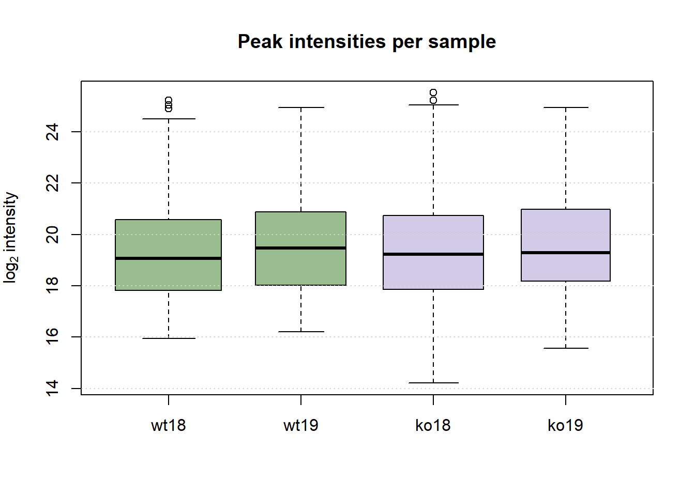
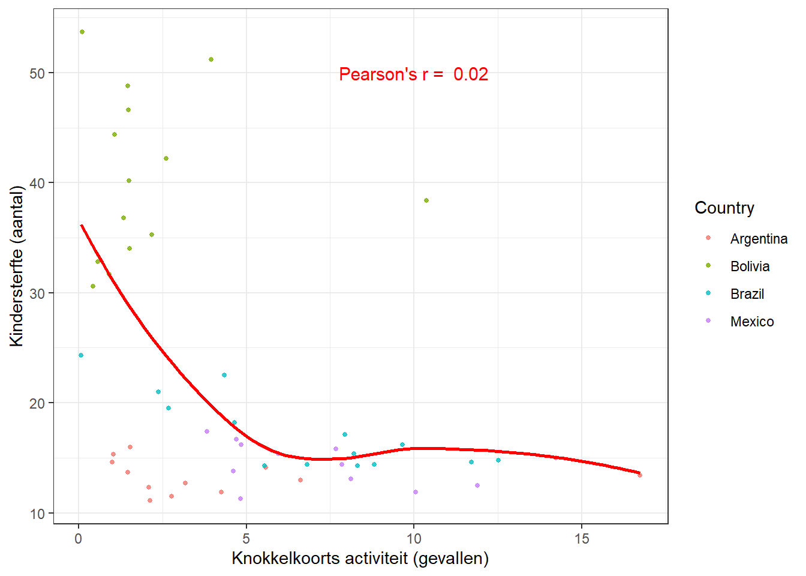

6 Vrije besteding: een nieuwe skill ontwikkelen
6.1 Introductie
Tijdens de DSFB2 Workflows lessen heb ik 32 uur vrij te besteden gekregen om te werken aan een nieuwe Data Science skill. Deze skill heb ik gekozen door mijzelf af te vragen waar ik over twee jaar wil zijn. Ik zie mijzelf dan als biomedisch analist een bijdrage leveren aan onderzoek naar de ontwikkeling, bestrijding en genezing van ziekten. Specifiek zou ik graag onderzoek doen naar kanker of hersenziekten met celkweek, gentherapie en eiwit analyse technieken. Daarbij gebruik ik de vaardigheden die ik heb geleerd tijdens de Data Sciences for Biology minor om mijn onderzoeksresultaten te analyseren en presenteren. Eiwit analyse technieken waarin ik specifiek geïnteresseerd ben, zijn High-Performance Liquid Chromatography (HPLC) en massaspectrometrie (MS). Uiteindelijk wil ik doorstuderen tot moleculair bioloog en grootschalige onderzoeken opzetten.
Tijdens mijn BMR specialisatie projecticum heb ik gewerkt met een HPLC. De UV-detectie resultaten kwamen op de computer binnen via de software Clarity Lite, waarna handmatig data van interesse is gekopieerd naar een Excel bestand. Van deze data zijn tabellen gemaakt in PowerPoint en grafieken in Excel. Statistische tests zijn uitgevoerd in SPSS. Om het aantal handmatige stappen en de vatbaarheid voor fouten van deze analyse te verminderen, ben ik gaan onderzoeken of ik de ruwe Clarity Lite data kan exporteren en aan een R package kan ‘voeren’ voor een volledige data analyse in RStudio. Al vrij snel bleek ik geen R package te kunnen vinden voor de analyse van (HP)LC data. Ik ben wel een handvol packages tegengekomen voor analyses van LC-MS data (zie tabel 6.1). Vloeistofchromatografie en massaspectrometrie zijn tegenwoordig vrijwel niet meer los van elkaar te denken. Daarnaast wil ik üperhaupt meer ervaring opdoen met massaspectrometrie. Hierom heb ik ervoor gekozen om mij voor 32 uur te richten op het analyseren van LC-MS data met R als nieuwe skill.
| Algorithm | Designed for | Used Dimensions | Environment | Visual tools |
|---|---|---|---|---|
| amsrpm | LC-MS | RT, I, m/z | R | No |
| msInspect/AMT | LC-MS/MS | RT, I, m/z | Java, R | No |
| PETAL | LC-MS | RT, m/z | R | No |
| Podwojski | LC-MS | RT, I, m/z | R | No |
| ptw | LC-MS | I, RT | R | No |
| xcms | LC-MS | RT, I, m/z | R | Yes |
| Note: | ||||
| Deze tabel is een onderdeel van de tabel ‘S1. Summary of published algorithms implemented … datasets.’ uit M. Ottensmann et al., 2018. De packages waar ik me verder in heb verdiept, zijn groen gekleurd. |
6.1.1 Plan van Aanpak
Ik heb een kort plan opgesteld waarmee ik het leren van deze nieuwe skill ga aanpakken. Eén week voordat het portfolio moet worden ingeleverd, ga ik echt van start.
| Stap | Wat | Schatting tijdsbelasting | Werkelijke tijdsbelasting |
|---|---|---|---|
| 1 | Oriënteren op de R packages die beschikbaar zijn voor LC-MS data analyse. | 2 uur | ~ 1,5 uur |
| 2 | Twee á drie packages kiezen en hier verder in verdiepen.** | 2,5 uur | ~ 1,5 uur |
| 3 | De packages proberen te installeren. | 2 uur | 2 uur |
| 4 | Eén package kiezen en een tutorial o.i.d. over deze package volgen. | ~ 8 uur | 11 uur |
| 5 | Het package zelf proberen toe te passen op andere data. | ~ 10 uur | 12,5 uur |
| 6 | Eigen code duidelijk uitschrijven in portfolio. | max. 4 uur | ~ 5 uur |
| Note: | |||
| *Ik maak een afspraak met een docent voor gebruik van de HPLC computer op HL7. | |||
| **Criteria: er moet tenminste één uitgebreide tutorial o.i.d. met bijbehorende dataset beschikbaar zijn voor het package, evenals nieuwe data om zelf een code voor te schrijven. |
Indien er tijd over is, probeer ik een (korte) tutorial te vinden van een ander package voor LC-MS analyse. Mocht het nou allemaal nergens op uitdraaien, is mijn plan B om de analyse van mijn BMR projecticum volledig te automatiseren in R. Dit is dan geen nieuwe skill, maar wel een volledig zelf bedachte analyse en zelfgeschreven code.
Het is me niet gelukt om het {amsrpm} package, beschikbaar als amsrpm.tar.gz, te installeren. Van het {ptw} package is een publieke repository met demo’s beschikbaar, maar de meeste informatie kon ik vinden over het {xcms} package. Er bestaat een publieke repository met verschillende vignettes waarin het package uitgebreid wordt gedemonstreerd. Belangrijk is ook dat de vignettes gebruik maken van ruwe data beschikbaar in andere ‘installeerbare’ packages, zoals {faahKO}. Na het kopiëren van de repository kon ik met ‘install()’ het package installeren. Hiervoor moeten RStudio versie 4.2 en RTools versie 4.2 gebruikt worden. Buiten de repository om kunnen de functions uit dit package door een ieder geïnstalleerd worden met ‘devtools::install(“sneumann/xcms”)’.
6.2 Deel 1: Oefenen met de vignette ‘LCMS data preprocessing and analysis with xcms’
Het vignette ‘LCMS data preprocessing and analysis with xcms’, te vinden op BioConductor of onder ‘xcms/vignettes/xcms.Rmd’ in de repository, demonstreert hoe het {xcms} package gebruikt kan worden voor de import, inspectie, preproccesing en eigenlijke analyse van LC-MS data. Daarvoor maakt het gebruik van data uit een studie van Alan Saghatelian et al. uit 2004, beschikbaar als {faahKO} package. Deze onderzoekers zijn opzoek gegaan naar lipiden in het zoogdier brein die gereguleerd worden door het enzym fatty acid amide hydrolase (FAAH). Daartoe hebben ze met LC-MS het metaboloom in kaart gebracht van wildtype muizen en van knock-out muizen met een inactief FAAH gen (Saghatelian et al. 2004). In het {faahKO} package is in NetCDF format de ruwe, positive ion en centroid mode LC-MS data aanwezig van ruggengraatmonsters van wild-type (WT) en knock-out (KO) muizen. Het vignette beperkt de analyse tot zes WT muizen en zes KO muizen (“LCMS Data Preprocessing and Analysis with Xcms” n.d.). Ik heb deze vignette grondig bestudeerd en de code gereproduceerd om te oefenen met het package, evenals om te checken of alle functions ook echt werken op mijn laptop.
6.3 Deel 2: xcms gebruiken voor een eigen analyse van de {faahKO} monsters
De nieuwgeleerde analyse heb ik toegepast op de monsters ko18, ko19, wt18 en wt19 uit het {faahKO} package. Deze monsters zijn niet meegenomen in de voorbeeld analyse. Ik begin met het inladen van een workspace met alle benodigde objects, omdat bepaalde functions tijdens het bouwen van dit Gitbook BiocParallel errors kunnen geven (bekend voor het {xcms} package). Deze functions zijn uitgezet met een ‘#’.
6.3.1 1) Data import
# Installeer de volgende packages via CRAN of BioConductor en laad ze vervolgens met:
library(xcms)
library(faahKO)
library(RColorBrewer)
library(pander)
library(magrittr)
library(pheatmap)
library(SummarizedExperiment)
# Laad workspace in omdat sommige functies nog wel eens een BiocParallel error gooien (bekend voor het {xcms} package):
load("workspace_eigen_code.RData")
# Maak een variabele met de paden naar de vier te analyseren files:
cdfs <- dir(system.file("cdf", package = "faahKO"), full.names = TRUE, recursive = TRUE)[c(3, 4, 9, 10)] ## full.names en recursive voor paden i.p.v. bestandsnamen
# Maak een phenodata dataframe:
pd <- data.frame(sample_name = sub(basename(cdfs), pattern = ".CDF", replacement = "", fixed = TRUE), sample_group = c(rep("KO", 2), rep("WT", 2)), stringsAsFactors = FALSE) ## sub() verwijdert .CDF uit naam, stringsAsFactors = FALSE geeft aan dat er geen factors gemaakt moeten worden van de character vectors
pd## sample_name sample_group
## 1 ko18 KO
## 2 ko19 KO
## 3 wt18 WT
## 4 wt19 WT# Laad de ruwe data:
raw_data <- readMSData(files = cdfs, pdata = new("NAnnotatedDataFrame", pd), mode = "onDisk") ## het pdata argument vraagt naar een AnnotatedDataFrame met metadata, onDisk zodat de ruwe data niet opgeslagen wordt in het geheugen (i.v.m. analyse snelheid)Het ‘phenodata’ dataframe functioneert als beschrijving van de experimentele opzet. Voor een echt experiment wordt een tabel aangemaakt met een beschrijving van elk sample. ‘raw_data’ is een ‘OnDiskMSnExp’ object dat per spectrum de gemeten retentie tijden, m/z ratio’s, intensiteiten en total ion currents bevat voor alle monsters (“LCMS Data Preprocessing and Analysis with Xcms” n.d.).
6.3.2 2) Data inspectie
Ik begin met het plotten van de base peak chromatograms (BPCs) en total ion chromatograms (TICs) voor elk monster. Een BPC laat een piek zien gebaseerd op het ion met het sterkste signaal. Een TIC laat een piek als som van alle ionen zien. In de ‘chromatogram()’ function staat het ‘aggregationFun’ argument op ‘max’ of ‘sum’ voor respectievelijk een BPC of TIC (“LCMS Data Preprocessing and Analysis with Xcms” n.d.).
# Verkrijg BPCs:
bpis <- chromatogram(raw_data, aggregationFun = "max")
group_colors <- c("#60984EA3", "#604DAF4A") ## geef KO een paarse kleur en WT een groene kleur. Beide doorzichtig voor plots
names(group_colors) <- c("KO", "WT")
# bpis bevat de BPCs van alle monsters. Bekijk bijv. de retentie tijden per spectra van één monster met:
head(rtime(bpis[1, 1]))## F1.S0001 F1.S0002 F1.S0003 F1.S0004 F1.S0005 F1.S0006
## 2501.379 2502.944 2504.509 2506.074 2507.639 2509.204head(mz(bpis[1, 1]))## [1] 200 600head(intensity(bpis[1, 1]))## F1.S0001 F1.S0002 F1.S0003 F1.S0004 F1.S0005 F1.S0006
## 145664 145664 145088 147392 152256 158592# Verkrijg TICs:
bpis_2 <- chromatogram(raw_data, aggregationFun = "sum")
# Plot chromatogrammen:
plot(bpis, col = group_colors[raw_data$sample_group], main = "BPC per sample: m/z ratio range: 200 - 600")
legend(4100, 1050000, legend = c("wt", "ko"), lty = 1, col = c("#60984EA3", "#604DAF4A"))plot(bpis_2, col = group_colors[raw_data$sample_group], main = "TIC per sample: m/z ratio range: 200 - 600")
legend(4100, 2250000, legend = c("wt", "ko"), lty = 1, col = c("#60984EA3", "#604DAF4A"))
Net als in de vignette kijk ik naar de ion current verdeling per monster om een indruk te krijgen van de kwaliteit van de runs:
tc <- split(tic(raw_data), f = fromFile(raw_data)) ## file splitsen op total ion currents per monster
boxplot(tc, col = group_colors[raw_data$sample_group], main = "Total ion current per sample", names = c("wt18", "wt19", "ko18", "ko19"))De verdelingen zien eruit zoals in de vignette.
Vervolgens maak ik een heatmap om een overzicht te krijgen van hoe de monsters aan elkaar gerelateerd zijn. Net als in de vignette cluster ik de monsters samen gebaseerd op hun BPCs.
# Groepeer intensiteiten in retentie tijd bins tegen variatie effect:
bpis_bin <- MSnbase::bin(bpis, binSize = 2)
# Bereken de correlatie coëfficiënten gebaseerd op log2-genormaliseerde bins:
cormat <- cor(log2(do.call(cbind, lapply(bpis_bin, intensity))))
colnames(cormat) <- rownames(cormat) <- raw_data$sample_name ## zet monsters horizontaal en verticaal
cormat## ko18 ko19 wt18 wt19
## ko18 1.0000000 0.9660005 0.9629162 0.9651172
## ko19 0.9660005 1.0000000 0.9437898 0.9815005
## wt18 0.9629162 0.9437898 1.0000000 0.9608660
## wt19 0.9651172 0.9815005 0.9608660 1.0000000# Geef phenodata op voor annotatie in heatmap:
ann <- data.frame(group = raw_data$sample_group)
rownames(ann) <- raw_data$sample_name
ann## group
## ko18 KO
## ko19 KO
## wt18 WT
## wt19 WTpheatmap(cormat, annotation = ann, annotation_color = list(group = group_colors))Er lijkt een vrij sterke correlatie te zijn tussen de KO en WT monsters met index 19. Ik ben er niet achter gekomen wat deze indexen precies betekenen, iets met de methode/meetvolgorde. Voor de monsters met index 18 lijkt dit niet het geval.
6.3.3 3) Piekdetectie
De peak detection wordt uitgevoerd met het centWave algoritme. Daartoe bepaal ik eerst wat de ‘peakwidth’-waarde moet zijn, door het extracted ion chromatogram (EIC) van één piek te plotten. Een EIC laat het signaal zien van één geselecteerd ion oftewel één m/z ratio (“LCMS Data Preprocessing and Analysis with Xcms” n.d.).
rtr <- c(2700, 2900)
mzr <- c(334.9, 335.1) ## zelfde als in vignette om de samples te kunnen vergelijken
chr_raw <- chromatogram(raw_data, mz = mzr, rt = rtr)
plot(chr_raw, col = group_colors[chr_raw$sample_group], main = "m/z ratio range: 334.9 - 335.1")De piek is maximaal 80 seconden breedt. Net als in de vignette stel ik de ‘peakwidth’ in op ‘20, 80’, wat volgens mij de minimale en maximale piekbreedte moet voorstellen.
# Voer peak detection uit op EIC:
cwp <- CentWaveParam(peakwidth = c(20, 80), noise = 5000, prefilter = c(6, 5000)) # noise en prefilter om de analyse tijd te verlagen
xdata <- findChromPeaks(raw_data, param = cwp)
# De gevonden pieken per sample met informatie over m/z ratio's, retentie tijden en intensiteiten:
head(chromPeaks(xdata))## mz mzmin mzmax rt rtmin rtmax into intb maxo sn
## CP0001 316 316 316 2517.029 2501.379 2535.808 741708.6 727319.6 27816 47
## CP0002 333 333 333 2515.464 2501.379 2540.503 960445.7 942106.5 33992 42
## CP0003 338 338 338 2517.029 2501.379 2540.503 788766.4 758962.1 29288 35
## CP0004 332 332 332 2517.029 2501.379 2545.198 4870388.0 4768520.5 169280 92
## CP0005 315 315 315 2515.464 2501.379 2540.503 3714288.6 3634444.9 131136 95
## CP0006 337 337 337 2517.029 2501.379 2549.893 4356732.5 4216751.1 142720 83
## sample
## CP0001 1
## CP0002 1
## CP0003 1
## CP0004 1
## CP0005 1
## CP0006 1Met de ‘refineChromPeaks’ function kan de detectie worden verfijnd. Pieken die bijv. niet voldoen aan een bepaalde intensiteit worden verwijderd. Hieronder worden overlappende pieken samengevoegd (“LCMS Data Preprocessing and Analysis with Xcms” n.d.).
## de volgende codes zijn uitgezet met '#' omdat ze BiocParallel errors geven tijdens het builden:
#mpp <- MergeNeighboringPeaksParam(expandRt = 4) ## check voor overlap in een rt window van vier seconden rond pieken
#xdata_pp <- refineChromPeaks(xdata, mpp)De resultaten van de peak detection kunnen op verschillende manieren worden samengevat:
# A) Overzicht van het aantal geïdentificeerde pieken per monster en hun breedtes:
summary_fun <- function(z)
c(peak_count = nrow(z), rt = quantile(z[, "rtmax"] - z[, "rtmin"])) ## voor elk monster
T <- lapply(split.data.frame(
chromPeaks(xdata_pp), f = chromPeaks(xdata_pp)[, "sample"]),
FUN = summary_fun)
T## $`1`
## peak_count rt.0% rt.25% rt.50% rt.75% rt.100%
## 339.000 10.954 34.429 45.383 57.904 173.709
##
## $`2`
## peak_count rt.0% rt.25% rt.50% rt.75% rt.100%
## 247.0000 10.9540 40.6885 50.0790 64.1630 406.8880
##
## $`3`
## peak_count rt.0% rt.25% rt.50% rt.75% rt.100%
## 302.000 3.130 35.994 49.296 61.033 424.103
##
## $`4`
## peak_count rt.0% rt.25% rt.50% rt.75% rt.100%
## 238.000 10.954 39.124 50.078 62.598 593.118T <- do.call(rbind, T)
rownames(T) <- basename(fileNames(xdata_pp))
kbl(T, caption = "__Summary statistics on identified chromatographic peaks__. Shown are the number of identified peaks per sample and their widths/duration.") %>% kable_styling(full_width = FALSE, bootstrap_options = "striped", position = "left", latex_options = "scale_down") %>% column_spec(1, bold = TRUE)| peak_count | rt.0% | rt.25% | rt.50% | rt.75% | rt.100% | |
|---|---|---|---|---|---|---|
| ko18.CDF | 339 | 10.954 | 34.4290 | 45.383 | 57.904 | 173.709 |
| ko19.CDF | 247 | 10.954 | 40.6885 | 50.079 | 64.163 | 406.888 |
| wt18.CDF | 302 | 3.130 | 35.9940 | 49.296 | 61.033 | 424.103 |
| wt19.CDF | 238 | 10.954 | 39.1240 | 50.078 | 62.598 | 593.118 |
# B) Per monster de 'locatie' van pieken in de m/z ratio - retentie tijd dimensie:
plotChromPeaks(xdata_pp, file = 1)
plotChromPeaks(xdata_pp, file = 3)# C) Piekdichtheid, oftewel het aantal pieken, over de retentie tijd:
plotChromPeakImage(xdata_pp) ## lichter van kleur = hogere dichtheidIntermezzo: ontleding van samenvattende tabel
‘split.data.frame(chromPeaks(xdata_pp), f = chromPeaks(xdata_pp)[, “sample”])’ maakt één list van per monster één vector met de geïdentificeerde pieken. Met ‘lapply()’ wordt op elke vector in deze list de ‘summary_fun’ function uitgevoerd, die het aantal pieken en de quantielen van de retentie tijd verdeling teruggeeft. Deze worden opgeslagen als list ‘T’ en ‘do.call()’ roept vervolgens de function ‘rbind’ aan, die de pieken en quantielen combineert in een array. De rijnamen worden vervangen en er wordt een tabel gemaakt.
Ik controleer net als in de vignette de piekdetectie met de piek die hierboven is gebruikt om de ‘peakwidth’ te bepalen:
# Nogmaals de voorbeeldpiek:
plot(chr_raw, col = group_colors[chr_raw$sample_group], main = "m/z ratio range: 334.9 - 335.1")
# Maak het EIC opnieuw, ditmaal bevat het ook de geïdentificeerde pieken van het ion:
chr_ex <- chromatogram(xdata_pp, mz = mzr, rt = rtr)
sample_colors <- group_colors[chr_ex$sample_group]
plot(chr_ex, col = group_colors[chr_raw$sample_group], lwd = 2, peakBg = sample_colors[chromPeaks(chr_ex)[, "sample"]], main = "m/z ratio range: 334.9 - 335.1") ## highlight de geïdentificeerde pieken# Verkrijg info over de pieken in deze regio:
kbl(chromPeaks(xdata_pp, mz = mzr, rt = rtr), caption = "__Identified chromatographic peaks in a selected m/z and retention time range__.") %>% kable_styling(full_width = FALSE, bootstrap_options = "striped", position = "left", latex_options = "scale_down") %>% column_spec(1, bold = TRUE)| mz | mzmin | mzmax | rt | rtmin | rtmax | into | intb | maxo | sn | sample | |
|---|---|---|---|---|---|---|---|---|---|---|---|
| CP0041 | 335 | 335 | 335 | 2786.201 | 2764.291 | 2812.805 | 211297.2 | 194283.0 | 8158 | 15 | 1 |
| CP0403 | 335 | 335 | 335 | 2783.069 | 2762.725 | 2812.804 | 285228.1 | 264248.6 | 9154 | 18 | 2 |
| CP0718 | 335 | 335 | 335 | 2787.765 | 2765.855 | 2820.629 | 1636669.0 | 1603950.7 | 54640 | 78 | 3 |
| CP1060 | 335 | 335 | 335 | 2784.635 | 2759.595 | 2809.674 | 643673.2 | 631119.1 | 20672 | 54 | 4 |
Ik rond de piekdetectie af door te kijken naar de distributie van piek intensiteit per monster. Hiermee controleren ik volgens de vignette of er geen stelselmatige verschillen zijn tussen de runs van de monsters (“LCMS Data Preprocessing and Analysis with Xcms” n.d.).
# Verkrijg piek intensiteiten per monster op een log2-schaal:
ints <- split(log2(chromPeaks(xdata_pp)[, "into"]),
f = chromPeaks(xdata_pp)[, "sample"])
boxplot(ints, varwidth = TRUE, col = group_colors[xdata_pp$sample_group],
ylab = expression(log[2]~intensity), main = "Peak intensities per sample", names = c("wt18", "wt19", "ko18", "ko19"))
grid(nx = NA, ny = NULL)
6.3.4 4) Alignment
De retentie tijd van eenzelfde ion kan variëren tussen monsters (zie EIC voorbeeldpiek). Ik corrigeer hiervoor met de ‘adjustRtime’ function, die de pieken langs de retentie tijd as verschuift om ze te alignen. Hieronder wordt de obiwarp methode gebruikt die de retentie tijden van de spectra alignt, beter bekend als warping (“LCMS Data Preprocessing and Analysis with Xcms” n.d.).
# Align:
xdata_adj <- adjustRtime(xdata_pp, param = ObiwarpParam(binSize = 0.6))
#Vergelijk retentie tijden:
head(rtime(xdata_adj, adjusted = FALSE))## F1.S0001 F1.S0002 F1.S0003 F1.S0004 F1.S0005 F1.S0006
## 2501.379 2502.944 2504.509 2506.074 2507.639 2509.204head(rtime(xdata_adj))## F1.S0001 F1.S0002 F1.S0003 F1.S0004 F1.S0005 F1.S0006
## 2501.378 2502.971 2504.564 2506.156 2507.748 2509.340# BPCs vóór alignment:
plot(bpis, col = group_colors[raw_data$sample_group], main = "BPC per sample: m/z ratio range: 200 - 600")
legend(4100, 1050000, legend = c("wt", "ko"), lty = 1, col = c("#60984EA3", "#604DAF4A"))
# BPCs ná alignment:
## de volgende function geeft in deze context BiocParallel errors tijdens het builden:
#bpis_adj <- chromatogram(xdata_adj, aggregationFun = "max", include = "none")
plot(bpis_adj, col = group_colors[bpis_adj$sample_group], main = "BPC per sample after alignment: m/z ratio range: 200 - 600")
legend(4100, 1050000, legend = c("wt", "ko"), lty = 1, col = c("#60984EA3", "#604DAF4A"))# Plot ook het verschil tussen de ruwe en aangepaste retentie tijden:
plotAdjustedRtime(xdata_adj, col = group_colors[xdata_adj$sample_group])Het effect van de alignment is goed zichtbaar op de voorbeeldpiek:
# Nogmaals de ruwe EIC voorbeeldpiek:
plot(chr_raw, col = group_colors[chr_raw$sample_group], main = "m/z ratio range: 334.9 - 335.1")
# Verkrijg het EIC van de voorbeeldpiek na retentie tijd correctie:
chr_adj <- chromatogram(xdata_adj, rt = rtr, mz = mzr)
plot(chr_adj, col = group_colors[chr_raw$sample_group], peakType = "none", main = "m/z ratio range: 334.9 - 335.1")6.3.5 5) Correspondence
De laatste preprocessing-stap is het identificeren van dezelfde pieken in de monsters: de correspondence analysis. Daartoe worden de pieken eerst per kleine m/z ratio-intervallen gegroepeerd in features op basis van de piekdichtheid over de retenie tijd. Hieronder een voorbeeld voor het m/z ratio interval 305.05 - 305.15 (“LCMS Data Preprocessing and Analysis with Xcms” n.d.).
# Defineer interval:
mzr <- c(305.05, 305.15)
# Verkrijg bijbehorend EIC:
## deze function geeft BiocParallel errors tijdens het builden:
#chr_mzr <- chromatogram(xdata_adj, mz = mzr)
# Groepeer pieken:
pdp <- PeakDensityParam(sampleGroups = xdata_adj$sample_group, minFraction = 0.4, bw = 30) ## 'minFraction = 0.4' geeft aan dat alleen pieken gegroepeerd worden die in minstens 40% van de monsters voorkomen, 'bw = 30' geeft de SD van de Kernel lijnsmoothing methode
# Plot resultaat:
plotChromPeakDensity(chr_mzr, col = sample_colors, param = pdp, peakBg = sample_colors[chromPeaks(chr_mzr)[, "sample"]], peakCol = sample_colors[chromPeaks(chr_mzr)[, "sample"]], peakPch = 16, main = "m/z ratio range: 305.05 - 305.15")Het bovenste paneel highlight de pieken in de EICs van de monsters. Het onderste paneel laat zien welke monsters (y-as) bij een bepaalde retentie tijd een piek lieten zien. Zo laten alle vier de monsters een piek zijn bij retentie tijden van ~ 2900 en 3500 seconden.
Ik definieer nu volgens de vignette de features van de gehele dataset en voer hier de correspondence analysis op uit met de ‘groupChromPeaks’ function:
pdp <- PeakDensityParam(sampleGroups = xdata_adj$sample_group, minFraction = 0.4, bw = 30)
xdata_cor <- groupChromPeaks(xdata_adj, param = pdp)De resultaten van de preprocessing worden met de ‘quantify’ function samengevat tot een ‘SummarizedExperiment’ object:
res <- quantify(xdata_cor)
# Informatie over de monsters:
colData(res)## DataFrame with 4 rows and 2 columns
## sample_name sample_group
## <character> <character>
## ko18.CDF ko18 KO
## ko19.CDF ko19 KO
## wt18.CDF wt18 WT
## wt19.CDF wt19 WT# Informatie over de features:
featureDefinitions(xdata_cor)## DataFrame with 466 rows and 11 columns
## mzmed mzmin mzmax rtmed rtmin rtmax npeaks
## <numeric> <numeric> <numeric> <numeric> <numeric> <numeric> <numeric>
## FT001 205.00 205.0 205.0 2786.11 2783.61 2788.05 4
## FT002 206.00 206.0 206.0 2785.11 2784.97 2787.60 3
## FT003 207.10 207.1 207.1 2712.81 2711.68 2713.95 2
## FT004 233.05 233.0 233.1 3017.70 3012.26 3023.14 2
## FT005 241.10 241.1 241.1 3678.22 3672.32 3688.44 3
## ... ... ... ... ... ... ... ...
## FT462 594.20 594.2 594.2 3392.98 3392.98 3392.98 1
## FT463 594.35 594.3 594.4 3615.25 3613.90 3616.60 2
## FT464 595.20 595.2 595.2 2999.10 2999.10 2999.10 1
## FT465 596.35 596.3 596.4 3811.98 3808.11 3816.29 4
## FT466 597.40 597.4 597.4 3813.65 3813.65 3813.65 1
## KO WT peakidx ms_level
## <numeric> <numeric> <list> <integer>
## FT001 2 2 43,366,637,... 1
## FT002 1 2 30,620,912 1
## FT003 1 1 19,604 1
## FT004 1 0 67,71 1
## FT005 2 1 258, 518,1085 1
## ... ... ... ... ...
## FT462 0 1 716 1
## FT463 1 1 218,780 1
## FT464 0 1 654 1
## FT465 2 2 281,550,830,... 1
## FT466 0 1 831 1# Per monster per feature de som van de intensiteiten van de feature pieken:
head(featureValues(xdata_cor))## ko18.CDF ko19.CDF wt18.CDF wt19.CDF
## FT001 1714581.8 1220358.1 1810112.3 1507943.1
## FT002 194603.7 NA 228501.1 216393.1
## FT003 337473.3 NA 182162.0 NA
## FT004 209999.6 NA NA NA
## FT005 1345515.1 608016.5 NA 621437.9
## FT006 NA NA NA 214367.8Indien er voor een monster geen pieken van een bepaalde feature zijn gevonden, zien we ‘NA’.
Missende intensiteiten worden ingevuld gebaseerd op de intensiteit van het feature in de andere monsters. De m/z ratio interval - retentie tijd regio van een feature wordt daartoe bepaald met de ‘ChromPeakAreaParam()’ function: de onderste grenzen van m/z ratio en retentie tijd zijn gelijk aan de 25% quantielen van respectievelijk de laagste m/z ratio (‘mzmin’) en de laagste retentie tijd (‘rtmin’) van alle pieken. De bovenste grenzen zijn gelijk aan de 75% quantielen van de hoogste m/z ratio (‘mzmax’) en de hoogste retentie tijd (‘rtmax’) (“LCMS Data Preprocessing and Analysis with Xcms” n.d.).
xdata_fill <- fillChromPeaks(xdata_cor, param = ChromPeakAreaParam())
head(featureValues(xdata_fill))## ko18.CDF ko19.CDF wt18.CDF wt19.CDF
## FT001 1714581.8 1220358.09 1810112.3 1507943.1
## FT002 194603.7 148572.79 228501.1 216393.1
## FT003 337473.3 102700.34 182162.0 165815.6
## FT004 209999.6 269525.70 278783.0 178828.5
## FT005 1345515.1 608016.51 743080.2 621437.9
## FT006 NA 34687.66 NA 214367.8# NA's vóór invullen:
apply(featureValues(xdata_fill, filled = FALSE), MARGIN = 2,
FUN = function(z) sum(is.na(z))) # 'MARGIN = 2' geeft aan dat de functie wordt toegepast op de kolommen van 'xdata_fill'## ko18.CDF ko19.CDF wt18.CDF wt19.CDF
## 140 226 182 239# NA's ná invullen:
apply(featureValues(xdata_fill), MARGIN = 2,
FUN = function(z) sum(is.na(z)))## ko18.CDF ko19.CDF wt18.CDF wt19.CDF
## 22 28 26 40Als volgt gebruik ik de ‘featureSummary’ function voor een algemene samenvatting per feature. ‘count’ en ‘perc’ geven het aantal monsters aan waarin een feature is gevonden. ‘multi_count’ en ‘multi_perc’ geven het aantal monsters aan waarin meer dan één piek uit een feature is teruggevonden. Het ‘group’ argument verdeelt deze statistieken verder over knock-out en wildtype monsters (“LCMS Data Preprocessing and Analysis with Xcms” n.d.).
head(featureSummary(xdata_fill, group = xdata_fill$sample_group))## count perc multi_count multi_perc rsd KO_count KO_perc
## FT001 4 100 0 0 0.16700614 2 100
## FT002 3 75 0 0 0.08058298 1 50
## FT003 2 50 0 0 0.42268744 1 50
## FT004 1 25 1 100 NA 1 50
## FT005 3 75 0 0 0.49162595 2 100
## FT006 1 25 0 0 NA 0 0
## KO_multi_count KO_multi_perc KO_rsd WT_count WT_perc WT_multi_count
## FT001 0 0 0.2381438 2 100 0
## FT002 0 0 NA 2 100 0
## FT003 0 0 NA 1 50 0
## FT004 1 100 NA 0 0 0
## FT005 0 0 0.5338948 1 50 0
## FT006 0 0 NA 1 50 0
## WT_multi_perc WT_rsd
## FT001 0 0.12878983
## FT002 0 0.03848858
## FT003 0 NA
## FT004 0 NA
## FT005 0 NA
## FT006 0 NA# Voeg de samenvatting met ingevulde pieken toe aan 'res':
assays(res)$raw_filled <- featureValues(xdata_fill, filled = TRUE)
head(assay(res, "raw"))## ko18.CDF ko19.CDF wt18.CDF wt19.CDF
## FT001 1714581.8 1220358.1 1810112.3 1507943.1
## FT002 194603.7 NA 228501.1 216393.1
## FT003 337473.3 NA 182162.0 NA
## FT004 209999.6 NA NA NA
## FT005 1345515.1 608016.5 NA 621437.9
## FT006 NA NA NA 214367.8head(assay(res, "raw_filled"))## ko18.CDF ko19.CDF wt18.CDF wt19.CDF
## FT001 1714581.8 1220358.09 1810112.3 1507943.1
## FT002 194603.7 148572.79 228501.1 216393.1
## FT003 337473.3 102700.34 182162.0 165815.6
## FT004 209999.6 269525.70 278783.0 178828.5
## FT005 1345515.1 608016.51 743080.2 621437.9
## FT006 NA 34687.66 NA 214367.8Met de ‘featureChromatograms’ function kan voor elke feature een EIC gemaakt worden (“LCMS Data Preprocessing and Analysis with Xcms” n.d.). Er zijn in totaal 268 features (‘nrow(featureValues(xdata_fill, filled = TRUE))’), ik laat de pieken van de eerste vier zien:
feature_chroms <- featureChromatograms(xdata_fill, features = 1:4)
# EIC informatie eerste vier features:
chromPeaks(feature_chroms[1:4, ])## mz mzmin mzmax rt rtmin rtmax into intb maxo
## CP0053 205.0 205.0 205.0 2788.052 2766.480 2818.842 1714581.8 1643169.4 63800
## CP0407 205.0 205.0 205.0 2786.199 2762.725 2817.498 1220358.1 1164812.1 39104
## CP0719 205.0 205.0 205.0 2783.610 2762.676 2813.673 1810112.3 1740802.4 63200
## CP1063 205.0 205.0 205.0 2786.022 2763.892 2820.934 1507943.1 1445439.2 49144
## CP0035 206.0 206.0 206.0 2784.971 2768.022 2815.764 194603.7 182508.9 8483
## CP0701 206.0 206.0 206.0 2785.107 2764.170 2812.162 228501.1 212686.2 8450
## CP1051 206.0 206.0 206.0 2787.605 2762.315 2814.578 216393.1 202836.7 7652
## CP0020 207.1 207.1 207.1 2713.948 2701.542 2743.337 337473.3 335177.5 14035
## CP0682 207.1 207.1 207.1 2711.681 2693.470 2725.244 182162.0 165026.9 10354
## CP0078 233.1 233.1 233.1 3012.260 2998.279 3043.347 209999.6 196015.1 21048
## CP0082 233.0 233.0 233.0 3023.137 2964.127 3066.682 364299.5 313862.2 21352
## sn sample row column
## CP0053 37 1 1 1
## CP0407 33 2 1 2
## CP0719 42 3 1 3
## CP1063 40 4 1 4
## CP0035 17 1 2 1
## CP0701 12 3 2 3
## CP1051 19 4 2 4
## CP0020 47 1 3 1
## CP0682 13 3 3 3
## CP0078 14 1 4 1
## CP0082 24 1 4 1# EICs:
plot(feature_chroms, col = sample_colors, peakBg = sample_colors[chromPeaks(feature_chroms)[, "sample"]])Ik rond de analyse af met een principal component analysis, waarmee wordt bepaald hoe de monsters in dit experiment zich tot elkaar verhouden. Er is geen data normalisatie stap beschikbaar binnen het {xcms} package.
# Log2-transformeer de features:
ft_ints <- log2(assay(res, "raw_filled"))
# Voer de PCA uit:
pc <- prcomp(t(na.omit(ft_ints)), center = TRUE) ## negeer missende waarden met 'na.omit()' en trek de gemiddelde intensiteit van alle intensiteiten af met 'center = TRUE'
summary(pc)## Importance of components:
## PC1 PC2 PC3 PC4
## Standard deviation 15.3020 13.8276 7.5980 2.388e-14
## Proportion of Variance 0.4847 0.3958 0.1195 0.000e+00
## Cumulative Proportion 0.4847 0.8805 1.0000 1.000e+00# Plot de PCA resultaten:
cols <- group_colors[xdata_fill$sample_group]
pcSummary <- summary(pc)
plot(pc$x[, 1], pc$x[,2], pch = 21, main = "",
xlab = paste0("PC1: ", format(pcSummary$importance[2, 1] * 100,
digits = 3), " % variance"),
ylab = paste0("PC2: ", format(pcSummary$importance[2, 2] * 100,
digits = 3), " % variance"),
col = "darkgrey", bg = cols, cex = 2)
grid()
text(pc$x[, 1], pc$x[,2], labels = xdata_fill$sample_name, col = "darkgrey",
pos = c(4, 3, 1, 2), cex = 1)
Conclusie
Volgens PC1, wat 48,5% van de variatie omvat, is er een duidelijk verschil tussen de monsters gebaseerd op aanwezigheid van het werkzame FAAH gen. Volgens PC2, met 39,6% variatie ook een aanzienlijk signaal, worden de monsters ook verdeeld gebaseerd op hun index. Omdat er niet van te voren genormaliseerd is, zou dit verschil veroorzaakt kunnen worden door een afwijking in de methode. Bijvoorbeeld: de dag waarop is gemeten heeft het resultaat beïnvloedt (“LCMS Data Preprocessing and Analysis with Xcms” n.d.).
6.4 Afronding
Wat hebben de afgelopen 32 uur mij gebracht? Het meest heb ik opgestoken van de hindernissen die ik tegenkwam tijdens de installatie van nieuwe R packages. Van een verouderde RTools versie tot missende function beschrijvingen en errors in een package zelf. Ik vind het waardevol om alle stappen, van het bedenken wat voor een package je nodig hebt tot je eigen analyse schrijven, doorlopen te hebben. Daarnaast heb ik geleerd wat voor preprocessing stappen er nodig zijn om van ruwe MS data te komen tot een vergelijking van samenstellingen tussen monsters. Ik verwacht niet dat mijn ervaring met het {xcms} package mij direct gaat helpen tijdens mijn stage of werk; wanneer ik met een massaspectrometer ga werken verwacht ik dat de metingen geanalyseerd worden in een speciaal programma dat geen aanvulling nodig heeft van een dergelijk package. Desalniettemin verwacht ik wél dat ik nu beter kan inschatten en begrijpen wat er achter de schermen van zo’n programma allemaal moet gebeuren. Daarnaast zou ik met behulp van dit package mijn ruwe data en gebruikte analyse wel openbaar kunnen maken, waarmee ik anderen kan helpen of om hulp en feedback kan vragen. De komende tijd zal ik verder werken aan mijn skill door te oefenen met andere R packages, zoals {ptw}. Ik hoop daarmee mijn algemene begrip van MS data, preprocessing en analyses te vergroten. Op school zijn een aantal mooie massaspectrometers aanwezig. Ik heb al een keer een introductie van een docent gekregen op een UPLC-MS en zal ook zeker om een vervolg vragen. Daarbij zal ik Chemie docenten en studenten vragen hoe zij de MS data precies analyseren en me gaan verdiepen in de door hun gebruikte programma’s. Ik weet zeker dat ik daarmee goed voorbereid ben op mijn droomstage en een bedrijf zelfs kan helpen in de richting van een betere analyse workflow.